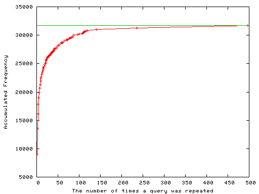
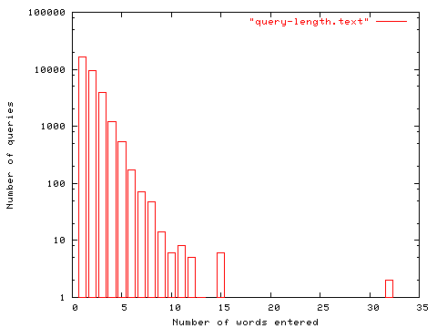

NB! The data presented here were collected from
log files 2005. The systems the statistics apply to have since all been
replaced. Some of them even before I wrote this note. I am sure, though,
that the user information needs and the user user observed behaviours have
not changed very much since then.
My colleague Jacob Larsen helped me
categorizing the queryies in the statistical sample analyzed.
What can deduced by analyses of the search terms entered into the search field on the home page of a large modern library? Could we possibly regard this form as the digital library´s information desk, and the queries as the request from its patrons? If we do that, what could we then learn about the quality of service?
In this note we do just that. We regard the terms entered into the form as manifestation of our patrons needs and in order to find out what they need, we have performed a preliminary text mining exercise. We hope that this will help us designing a new search facility that will better answer the needs of our users.
During the period from the end of May to the end of November 2005 users performed 31729 searches in the search field on the Royal Library's home page1. A monthly overview can be found in Table 1.
| Month | Number of searches |
|---|---|
| May | 14 |
| June | 3578 |
| July | 3700 |
| August | 4937 |
| September | 6735 |
| October | 7151 |
| November | 5614 |
| Total | 31729 |
The log files on KB's external web-server, www.kb.dk were text mined with respect to the URI of the full text search field on the KB top page. All terms were transformed to lower case in order to minimize the number of duplicates. There are still duplicates, since the procedure used could not distinguish between terms like "hc andersen" and "h.c. andersen". The frequencies for each term was calculated, and the data where then sorted with respect to that and transformed into a large table which can be found in the companion document (it is HUGE and may kill your browser) All 31729 searches.
The data set indicates that there are a few questions that are performed repeatedly. These are, however a fairly small fraction but could be labelled as FAQs. For example, the ten most frequent FAQs where posed 1647 times. This amounts to roughly five percent of the grand total. The unique queries, and the ones that were repeated up to ten times constitutes 13255 search events.
The accumulated frequency of queries, from the unique ones (search terms that appear once in the log files) to the left to the FAQs to the right is depicted in Figure 1. There were 9023 unique queries, while the all time high search term is infomedia. We will return to this term below.
Figure 1. The accumulated frequency of query repetitions. For any value of the query repetition on the x-axis, the corresponding y-value is the number of queries with this or lower x-value.
The graph approaches asymptotically the grand total 31729. The take home message of this statistical exercise is that if we concentrated on satisfying the users that posed the most common questions, we would leave a majority of our users out in the cold.
The number of words entered into the search field was, on average, 1.8 which we assume is higher than average for search engines2. The distribution of query lengths can be seen in Figure 2. The unusually high number of search terms is can be understood by the facts that a person (e.g., an author) is best identified by a given name and a surname and that a book is best identified by its author and title. I.e., we may actually expect that library search engines are queried with about two search terms, since common searches call for at least two words.
The mode of the query length distribution is at one word, and the median at about 16, so it is still extremely skewed
Figure 2. Distribution of the number of words entered into the search field. NB, the y-axis is using logarithmic scale.
Given that the engine covered the web only (i.e., not the catalogues, and only a subset of our own databases and not the licensed resources themselves), we may conclude that many of our users left the search engine quite frustrated. From the logs we cannot deduce just how frustrated, since unfortunately we do not know the success rate. From intuition and some tests with the current Google Box search engine, we can give a rule of thumb: The success rate is increasing with query repetition rate. The about one third of the query terms that are more or less unique have a high failure rate, whereas the success rate is extremely high for the common ones.
What results did the users expect when entering terms into that search field? A decent service would be one answer, but that will not help us. It is more useful to look at the terms, and ask the question: To which kind database would one preferably send each of the queries? Using that method, we may categorize the terms, try to guess the users intention and deduce requirements for our new search service.
The method is somewhat arbitrary, and we have not had the time to categorize all 31729 queries. We give a list of query types below. To us they are fairly obvious when looking at the data. The estimated frequencies are based on a random sample of search terms (about 1% of the entire data-set). The frequencies are calculated on the number of terms, not queries. This means that the term infomedia was counted once, although it was repeatedly used as a query. Zero percent means that the category was too rare to appear in the sample.
The search term infomedia refers most likely to the PolINFO/Infomedia database. This is the most frequent term in the data set. It is twice as common as the one on the second position. The term was submitted on the average 2.7 times a day during the period. Clearly users were looking for an electronic resource. Other similar search terms are portrætregistranten, lexis nexis, grove music online, fjernadgang and jstor.
journal of japanese studies vol. 3.2
There are a large number of searches like den lille havfrue, den grimme ælling, guaman poma, handbook of applied cognition etc. If users expected a bibliographic search for romeo og julie or a digitized version is hard to tell. Most likely both.
dostojevskij is a clearly an author, and the user who entered it was almost certainly expecting information on our holdings. But did he or she want information on books by Fjodor or about him? We will never know.
It is not always obvious if a search for a name was intended as a bibliographic search, or if it was one for local resources. This is the case for names like h c andersen and kierkegaard. We may, safely, assume that users were expecting a bibliographic search for a number of the names find in the logs.
Subject terms are very common; they are terms like psykologi, girafsprog, 20th century music and middelalder.
Subject searches are difficult to evaluate. The user, who obviously has a need to get information on something, honors us with a click in order to do something about it. They expect possibly information categorized by subject descriptors. These users might have wished full-text search capabilities in journal articles or even in encyclopedias.
Most of these are obviously years, 1945. I.e., they could be seen as subjects.
harmonika - orkesternoder, foto, rusland billeder, folk songs, 1 instrument og 1 sangstemme, romaner
Verbatim quotations from literary works, poems or even song texts appear now and then: once upon a time there was a prince is the incipit of "The Princess and the Pea"
Terms like bibliotheca danica, portrætsamlingen, aviser, belong to this category. The last of these could also be a synonym for infomedia. This is a heterogenous category. Some of the searchers obviously know that there exists a collection called bibliotecha danica. However, you may just take for granted that there exists a collection of aviser, i.e. newspapers, at a National Library.
Some personal names are easily recognized as belonging to members of staff. erland kolding, birgit henriksen, michael cotta-schønberg and sigfrid lundberg ;-) belong to this category.
Departments within the library are popular targets: håndskriftafdelingen, fiolstræde
åbningstide, bevaring, ledige stillinger, historien om det kongelige bibliotek, blixen - conference room and årsberetning belong here.
Names, a majority of them personal and a small fraction corporate ones, was the single largest category of search terms. More than one third (35%) of the terms did belong to this category. About one quarter of the terms were subjects (24%). Finally about one tenth of them (11%) where for specific titles. Some of these included both author and title.
Searches for names and titles give hits in various places in our web site, notably in archived lists of new acquisition, but also (if the searcher is really lucky) in digital texts.
For broad subject searches, like fysik (physics) there is a fair chance that the user finds an entry in the subject based collections of electronic resources. For narrow terms, eg, Inkaer (inka indians) there are no way out.
This search engine was only capable to search in the texts available (this is true for the Google box as well). There is no way to tell users "Mona Lisa, see Leonardo da Vinci".
The names, titles and subject searches may to some extent be regarded as bibliographic. Some users may have opted for a web search rather than a bibliographic in the catalogue in the hope to get digital content. Some search terms, like infomedia are obviously intended as searches for electronic resources. The search terms in this category have high repetition rate, which shows that they are issued by quite experienced users of the library.
The distinction between our categories Collections and Electronic Resources are a bit arbitarary, and to some extent this is true for the Mediatypes as well.
The Electronic Resources are a mixture of licensed material and local resources. For inexperinced users it is essential that there are good collection level descriptions 3 which together with subject based information guides may serve as aggregating entry points for all kinds of resources accessable via the library.
Over the search form we are investigating there is a text stating: Search on KB's web (but NOT in REX). One may argue that some of our users have misunderstood the function of this input field.
However, one may just as well argue that our search field does not take into account the requirements of our users and that a large library should be able to provide answers to all these kinds queries using a simple search on its homepage.